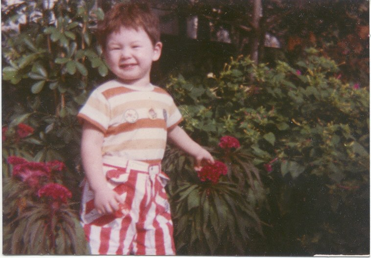
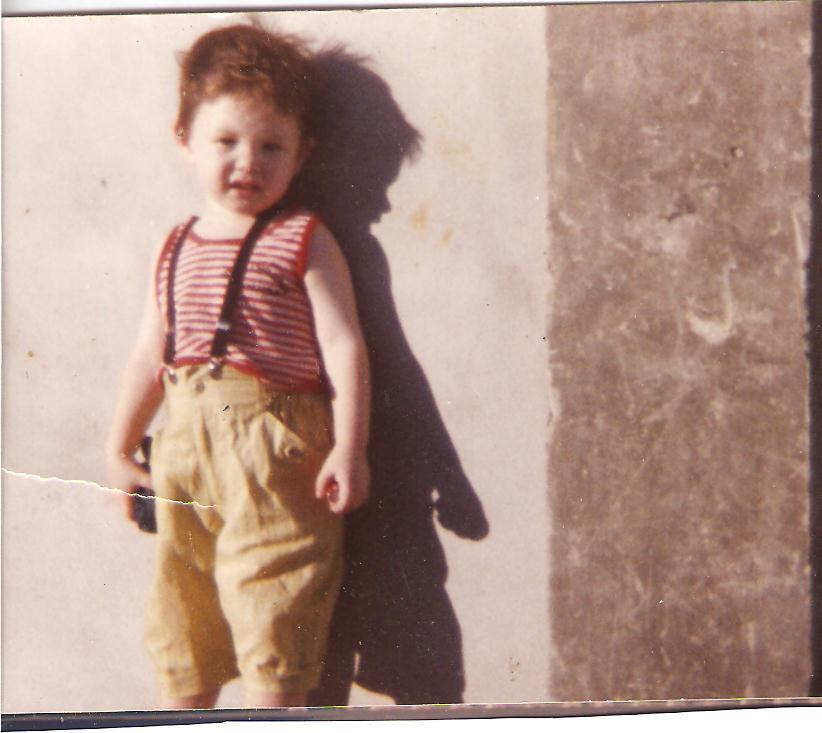
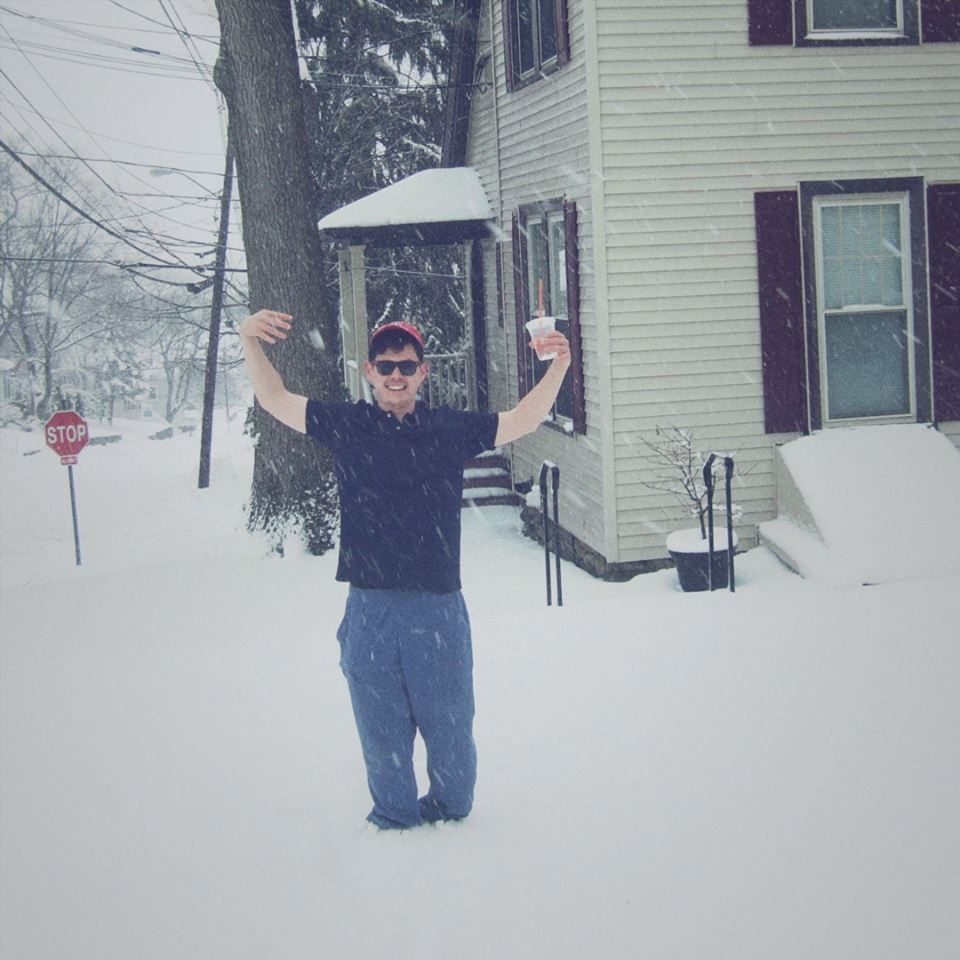

About Me
  

Doly was born in Seoul, South Korea between American father who was teaching english at local colleges and Korean mother
For some reasons, he went to liberal arts college in a small town in Kentucky where he did not learn southern accent.
He received full scholarship for 4 years while he attended and he finally graduated with bachelors of arts in Economics.
Through the liberal arts education provided at college, Doly obtained learning skills to learn, understanding for different perspectives,
and qualities to be a global citizen.
His interests lay on Data Science, Data Analytics, and Financial Analytics using Python, SQL and R.